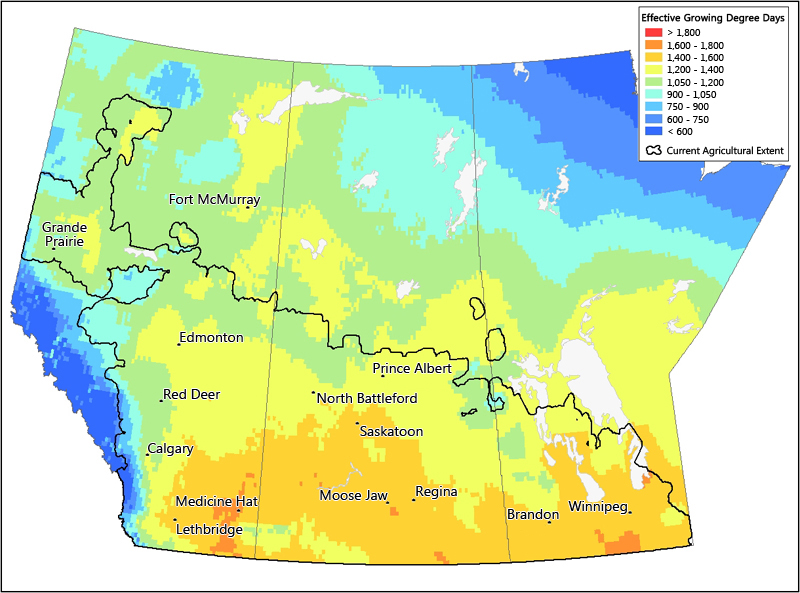

name: GDD class: center, middle, slide-background, yellow # {{ name }} web-based presentation <br><br><br> <br><br><br> Created by .credits[Yasaman] .gray[,] .credits[Majid] .gray[,] .credits[Hoda] .gray[,] .credits[Frieda] .gray[,] .credits[Aziz] .gray[&] .credits[Harris] --- # Introduction .medium[ This is the web-based presentation of Growing degree-day (GDD) for three cities .gray.italic[St. Johns], .gray.italic[Vancouver] and .gray.italic[Toronto].  ] --- # Project structure ```bash GDD-analysis |-- csvData #(Including all the data files) | |-- St_Johns GDD Data | |-- Vancouver GDD Data | |-- Toronto GDD Data |-- reports | | |-- All data which are needed for making latex |-- plots #(Including all the result or plot files) | | |--Included all plots |-- slides | |-- presentation.html |-- src #(Included all the source codes) | |-- testSuite | |-- All source codes |-- Makefile |-- ReadME.md ``` --- class: center, middle, slide-background, yellow # Hoda Rafieipour .magnet[Accumulated GDD vs Time for selected cities] --- <div class="bokehframe" id="bokehcontent"></div> .gray.small.center[Accumulated GDD vs Time for selected cities] --- class: center, middle, slide-background, yellow # Majid Beheshti .magnet[Min/Max Plot & Final Task] --- ## Plot of min/max tempretures St. John's 2016 .center[ <img class="imgframe" src="../plots/minMaxPlotSt_Johns.png" alt="St. Jonh's Plot"> ] .gray.small.center[Plot of min/max tempretures St. John's 2016] --- ## Plot of min/max tempretures Toronto 2016 .center[ <img class="imgframe" src="../plots/minMaxPlotToronto.png" alt="Toronto 2016"> ] .gray.small.center[Plot of min/max tempretures Toronto 2016] --- ## Plot of min/max tempretures Vancouver 2016 .center[ <img class="imgframe" src="../plots/minMaxPlotVancouver.png" alt="Vancouver 2016"> ] .gray.small.center[Plot of min/max tempretures Vancouver 2016] --- ## Showing Mean Temp and Total precip based on GDD- St John's .center[ <img class="imgframe" src="../reports/finalTaskSt_Johns.png" alt="final task St John's"> ] .gray.small.center[Accumulate GDD for 2014 and 2015] --- ## Showing Mean Temp and Total precip based on GDD- Toronto .center[ <img class="imgframe" src="../reports/finalTaskToronto.png" alt="final task Toronto"> ] .gray.small.center[Accumulate GDD for 2014 and 2015] --- ## Showing Mean Temp and Total precip based on GDD- Vancouver .center[ <img class="imgframe" src="../reports/finalTaskVancouver.png" alt="final task Vancouver"> ] .gray.small.center[Showing Mean Temp and Total precip based on GDD- Vancouver] --- class: center, middle, slide-background, yellow # Harris Tanvir .magnet[GDD Plot] --- ## Accumulated GDD vs Time for 2016 .center[ <img class="imgframe" src="../plots/GDDPlotIMG.png" alt="GDD Plot"> ] .gray.small.center[Accumulated GDD vs Time for 2016] --- class: center, middle, slide-background, yellow # Frieda Musa .magnet[2016 Daily Growing Degree Days] --- <div class="bokehframe" id="bokehcontent3"></div> .gray.small.center[2016 Daily Growing Degree Days] --- <div class="bokehframe" id="bokehcontent4"></div> .gray.small.center[2016 Daily Growing Degree Days] --- <div class="bokehframe" id="bokehcontent5"></div> .gray.small.center[2016 Daily Growing Degree Days] --- class: center, middle, slide-background, yellow # Aziz Abu Saleh .magnet[Explore GDD calculation depending on T_base] --- ## Explore GDD calculation depending on T_base .center[ <img class="imgframe" src="../plots/secTask-3.png" alt="Task-3"> ] .gray.small.center[Explore GDD calculation depending on T_base] --- class: center, middle, slide-background, yellow # Yasaman .magnet[Bokeh plots for accumulated GDD for any city(St John's)] --- <div class="bokehframe" id="bokehcontent2"></div> .gray.small.center[Bokeh plot for accumulated GDD for any city(St John's)] --- class: center, middle, # The End For more information and exploring the source code go to the [github](https://github.com/yasaman-bahrami/GDD-analysis) page.